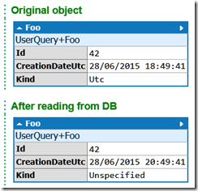
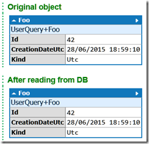

Comment récupérer une date en UTC avec SQLite
SQLite est un super moteur de base de données “in-process” : il est très léger, ne nécessite aucun serveur ni configuration, et fonctionne sur toutes les plateformes. Il y a même un provider ADO.NET officiel très bien réalisé. Cependant, si vous stockez des dates en UTC avec ce provider, vous allez probablement rencontrer un sérieux problème : bien que la date soit correctement stockée en UTC (elle est stockée dans un format similaire à ISO8601, avec un ‘Z’ pour indiquer la zone UTC), quand on la relit depuis la base de données, on obtient un DateTime converti en heure locale, avec Kind = Unspecified. Voici un exemple qui illustre le problème (en utilisant Dapper dans LINQPad) :
void Main()
{
string connectionString = @"Data Source=D:\tmp\testSQLiteDate.db";
using (var connection = new SQLiteConnection(connectionString))
{
connection.Open();
connection.Execute("create table Foo(Id integer not null primary key, CreationDateUtc datetime not null)");
var foo = new Foo{Id = 42, CreationDateUtc = DateTime.UtcNow};
foo.Dump("Original object");
connection.Execute("insert into Foo(Id, CreationDateUtc) values (@Id, @CreationDateUtc)", foo);
var foo2 = connection.Query<Foo>("select * from Foo where Id = @Id", new{ Id = 42 }).SingleOrDefault();
foo2.Dump("After reading from DB");
}
}
class Foo
{
public int Id { get; set; }
public DateTime CreationDateUtc { get; set; }
public DateTimeKind Kind { get { return CreationDateUtc.Kind; } }
}
Voilà le résultat :

Comme vous pouvez le voir, après avoir relu les données depuis la BDD, la date n’est plus en UTC, et il n’y rien qui indique qu’il s’agit d’une date locale. Cela peut causer toutes sortes de bugs si votre code compare des dates qui sont supposées être en UTC.
J’ai d’abord essayé de résoudre le problème dans mon code, en convertissant explicitement la date en UTC, avant de réaliser que la solution était beaucoup plus simple (quoique pas très bien documentée) : il existe un paramètre de la chaine de connexion pour contrôler comment les dates sont gérées. Il suffit de spécifier DateTimeKind=Utc dans la chaine de connexion :
string connectionString = @"Data Source=D:\tmp\testSQLiteDate.db;DateTimeKind=Utc";
Si vous utilisez SqliteConnectionStringBuilder pour construire la chaine de connexion, il faut définir la propriété DateTimeKind à DateTimeKind.Utc.
Le type de date est maintenant préservé :

Mise en garde importante : ce paramètre s’applique à toutes les dates lues depuis cette connexion. Si vous avez des dates qui n’étaient pas stockées en UTC, le provider les considèrera quand-même comme UTC, ce qui produira des résultats incorrects. N’utilisez donc ce paramètre que si toutes vos dates sont stockées en UTC.